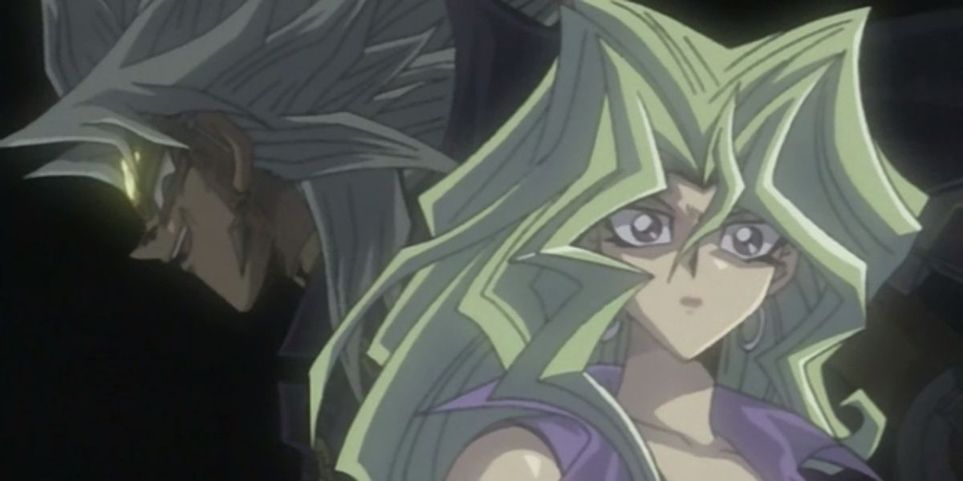

Origem de Yu-gi-oh!
Yu-Gi-Oh! (japonês para Rei dos Jogos) é uma franquia de mangá e anime criada por Tazuki Takahashi, um japinha que curtinha muito jogos, que involve personagens jogando Monstros de Duelo, um jogo de cartas com um baralho composto de monstros, magias e armadilhas em busca de derrotar um ao outro.
Mangá
Começou como um mangá (uma história em quadrinhos preta e branca) em 1996 no Japão e expandiu para jogos eletrnicos, animes, produtos reais baseados nas obras, brinquedos e outros produtos.
O primeiro mangá foi lançado de 1996 até 2004 e recebe o nome de "Duel Monsters"(Monstros de Duelo) e desde então outras gerações foram lançadas, com uma pequena diferença entre Mangá e Anime nas sequentes. A primeira geração (DM) tem uma história semelhante entre o mangá e o anime (o anime logicamente um pouco mais leve), o que não se pode dizer das outras gerações. A história se desenrola ao redor de Yugi Mutou e seus amigos, Joey Wheeler, Tristão e Téa tentando ajudar um encosto afixado a Yugi atravéz de uma relíquida amaldiçoada, enfrentando diversos vilões, sendo Seto Kaiba o maior rival de Yugi. Curiosamente a obra é repleta de elementos de cultura egípcia.
Anime
O primeiro anime de Yu-gi-oh! foi ao ar em 1998 e acompanhou o decorrer do mangá, com trama e personagens similares, porém com uma certa censura pesada (do mangá pro anime e do anime pro resto do mundo) o que resultou em vários fillers de qualidade duvidosa.
Card Game
No começo a obra focada em jogos no geral: Videogames jogos de cartas, gincanas e desafios. Porém em determinado capítulo foi apresentado um jogo imaginado pelo Tazuki Takahashi, o monstros de Duelo. O sucesso do jogo foi tão grande entre os fãs que virou o foco da obra e depois um jogo de verdade, administrado pela Konami. Exitem dois cards games: o OCG(Original Card Game) que rola no Japão e é altamente amável aos seus jogadores; e o TCG(trading card game) uma terra de ninguém.
No Brasil o responsável pelo jogo é a Destribuidora Devir (morra DEVIR morra imediatamente).esta empresa sempre causa problemas aos jogadores